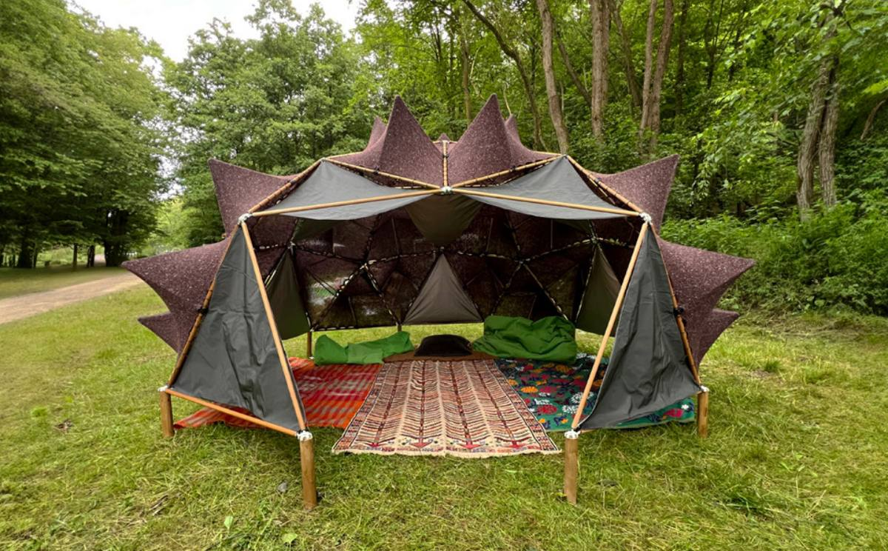

projekt SÁBÁTساباط
Pavilion explorer. A working model of the frame.
strut families
| Family | Length cm | Count |
|---|
connectors
| Type | Count |
|---|
model summary
connectors
Each connector is drawn and modelled from the values above. Move the sliders and the angles, bores and lengths recalculate. At the built values every part matches the stage-1 originals. Tags: S product spec or drawing, H Hāèl, C computed from the structure, A assumption.
computed values
| Value | Now | Source |
|---|
Hub and corner angles come from the 2V geometry, so they stay the same at every diameter; only the stick lengths grow. The peak and tee angles follow the peak height against the triangle size. Bores and sizes follow the stick thickness. The STL holds separate shells, not one welded solid.
parts for this version
| Connector | Count |
|---|

“SÁBÁT”, a structure commonly found in Yazd, Iran, series of interconnected arches or vaulted ceilings, harmonious blend of hospitality, grace, and cultural resonance.Hāèl, master thesis, 2024
The pavilion has a frame base. Six white hubs, the crown and five round the side, each sit at the centre of five knitted pyramids, a star of peaks. The grey triangles between the stars are flat tarps. One side star can be left out to open an entrance. The pavilion stands on short legs. Move the sliders to see how the base changes, and how many struts and connectors each version needs.